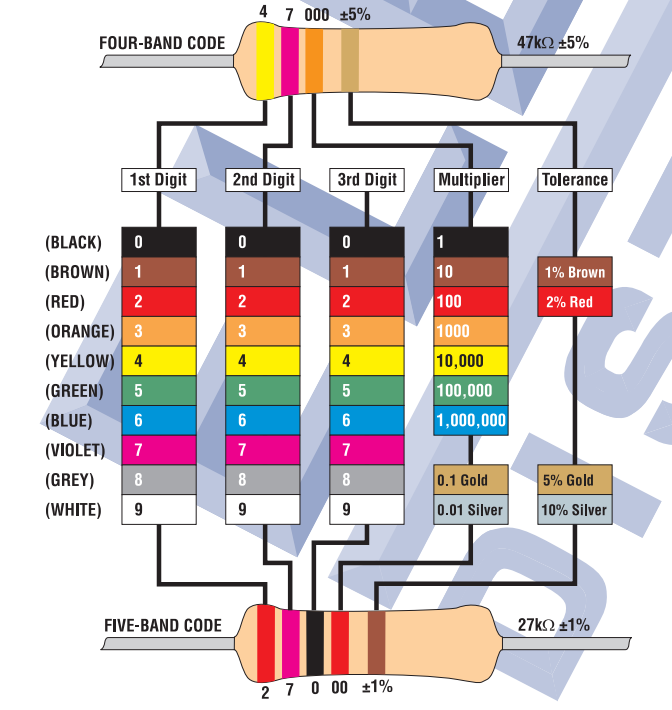
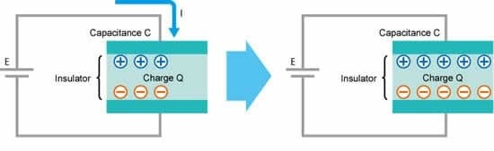
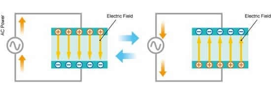
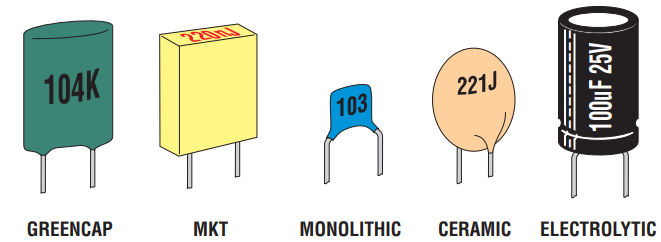
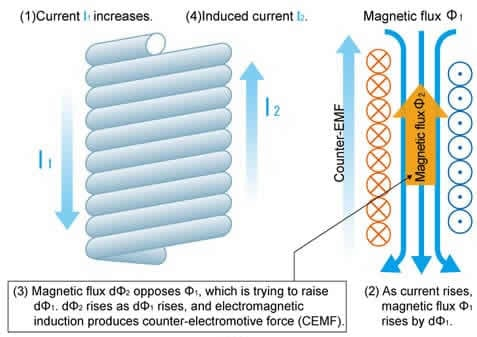

Passive Components#
Author : Emad Etehadi
What Is a Passive Component ?#
A passive element is an electrical component that does not generate power, but instead dissipates, stores, and/or releases it.They can only absorb electrical energy and dissipate it in the form of heat or store it in a magnetic or electric field. They cannot provide electric power or power amplification in an electric circuit. Common passive components include resistors, capacitors, and coils (also called inductors).These components are labeled in circuit diagrams as Rs, Cs and Ls, respectively. In most circuits, they are connected to active elements, typically semiconductor devices such as amplifiers and digital logic chips.
Resistors#
A resistor is a primary type of physical component that is used in electronic circuits. Resistors maintain or change electric current that flows in the circuit by consuming supplied electric power. For example, a simple circuit could consist of a power supply and a resistor. While maintaining a constant power supply, if the resistor value is increased, the current in the circuit will get smaller. If the resistor value is decreased, the current gets larger. In actual circuits, resistors are used to suppress current to avoid allowing more flow than the rated value into other components. They can also be used to obtain the required current or voltage by dividing voltage or current flow, or for measuring the flow in the circuit , this rule is called Ohm’s law : \( R = \frac{V}{I} \) where V is the voltage across the resistor, R is the resistance of the resistor, and I is the current flowing through the resistor.
Electronic symbols and notation#
resistor :
import schemdraw
from schemdraw import elements as elm
with schemdraw.Drawing():
elm.Resistor()
variable resistor : A variable resistor works by changing the length of its resistive track, allowing the resistance to be adjusted between zero and a maximum value. By moving a wiper contact along the track, the effective resistance changes. The basic formula related to resistance is : \( R = ρ \frac{L}{A} \) where R is the resistance, ρ is the resistivity, L is the length, and A is the cross-sectional area.
import schemdraw
from schemdraw import elements as elm
with schemdraw.Drawing() as d:
elm.ResistorVar()
Series and parallel resistors#
The total resistance of resistors connected in series is the sum of their individual resistance values :
import schemdraw
from schemdraw import elements as elm
with schemdraw.Drawing():
elm.Dot()
elm.Resistor().label('R1')
elm.Resistor().label('R2')
elm.DotDotDot()
elm.Resistor().label('Rn')
elm.Dot()
\( R_{eq} = \sum_{i=1}^{n} R_i = R_1 + R_2 + \cdots + R_n \)
The total resistance of resistors connected in parallel is the reciprocal of the sum of the reciprocals of the individual resistors :
import schemdraw
from schemdraw import elements as elm
with schemdraw.Drawing(show=False) as d1:
d1 += elm.Line()
d1.push()
d1 += elm.Resistor().down().label('R')
d1 += elm.Line().left()
d1.pop()
with schemdraw.Drawing() as d2:
for i in range(2):
d2 += elm.ElementDrawing(d1)
d2.push()
elm.Line().length(d2.unit/6)
elm.DotDotDot()
elm.ElementDrawing(d1)
d2.pop()
d2.here = (d2.here[0], d2.here[1]-d2.unit)
elm.Line().right().length(d2.unit/6)
elm.DotDotDot()
\( R_{eq} = \left( \sum_{i=1}^{n} \frac{1}{R_i} \right)^{-1} = \left( \frac{1}{R_1} + \frac{1}{R_2} + \frac{1}{R_3} + \cdots + \frac{1}{R_n} \right)^{-1} \)
Common usage patterns#
Current limiting#
Resistors are commonly used to limit the amount of current flowing through a circuit. Many circuit components (such as LEDs) require the current flowing through them to be limited, but do not themselves limit the amount of current. Therefore, oftentimes resistors will be added to prevent overcurrent situations. Additionally, oftentimes circuits do not need the amount of current that would be otherwise flowing through them, so resistors can be added to limit the power consumption of such circuits.
import schemdraw
from schemdraw import elements as elm
with schemdraw.Drawing():
R = elm.Resistor()
elm.Line().down()
elm.Line().left()
C = elm.SourceV()
Voltage divider#
Oftentimes circuits need to provide various reference voltages for other circuits (such as voltage comparators). A fixed voltage can be obtained by taking two resistors in series between two other fixed voltages (such as the source voltage and ground). The terminal between the two resistors will be at a voltage that is between the two voltages, at a linear distance based on the relative resistances of the two resistors. For instance, if a 200 ohm resistor and a 400 ohm resistor are placed in series between 6 V and 0 V, the terminal between them will be at 4 V.
import schemdraw
from schemdraw import elements as elm
with schemdraw.Drawing():
elm.Resistor()
elm.Resistor().down()
elm.Line().left()
elm.SourceV()
A voltage divider circuit, in its simplest form, is a circuit made from two resistors and a voltage supply. The output voltage is measured from between the two resistors. This results in a lower voltage than the input voltage supply.
Pull-down and pull-up resistors#
When a circuit is not connected to power, the voltage of that circuit is not zero but undefined (it can be influenced by previous voltages or the environment). A pull-up or pull-down resistor provides a voltage for a circuit when it is otherwise disconnected (such as when a button is not pushed down or a transistor is not active). A pull-up resistor connects the circuit to a high positive voltage (if the circuit requires a high positive default voltage) and a pull-down resistor connects the circuit to a low voltage or ground (if the circuit requires a low default voltage). The resistor value must be high enough so that, when the circuit is active, the voltage source it is attached to does not over influence the function of the circuit, but low enough so that it “pulls” quickly enough when the circuit is deactivated, and does not significantly alter the voltage from the source value.
Resistor value#
Many resistors are so small that it would be difficult to print their value and % tolerance on their body in digits. To overcome this, a coding system based on bands of distinctive colours was developed to assist in identification. Learning this colour code is not as necessary as it used to be (thanks to accurate, low cost digital multimeters!), but its not hard to learn and its quite useful knowledge anyway. The first thing to know is that there are two different resistor colour coding systems in use: one using a total of 4 colour bands, and the other 5. The 5-band system is generally used for 2% and closer tolerance resistors, even though the 4-band system is quite capable of handling any resistors with E12 or E24 values. Both systems use the same band colours to represent the various digits; the main difference is that 5-band resistors have an additional third band, which is almost always BLACK to represent a third digit of 0. Heres how both systems work in practice:

Capacitors#
A capacitor is another primary type of physical component used in electronic circuits. It has two leads and is used to store and release electric charge. A capacitor’s ability to store charge is referred to as its capacitance, measured in farads (F).
Structure#
A typical capacitor takes the form of two conductive plates separated by an insulator (dielectric). This type of circuit element cannot pass direct current (DC) because electrons cannot flow through the dielectric. However, a capacitor does pass alternating current (AC) because an alternating voltage causes the capacitor to repeatedly charge and discharge, storing and releasing energy. Indeed, one of the major uses of capacitors is to pass alternating current while blocking direct current, a function called ‘AC coupling’.
Function#
When a direct current flows into a capacitor, a positive charge rapidly builds up on the positive plate and a corresponding negative charge fills the negative plate. The buildup continues until the capacitor is fully charged, when the plates have accumulated as much charge (Q) as they can hold. This amount is determined by the capacitance value (C) and the voltage applied across the component: (Q = CV). At that point, current stops flowing.

When an alternating current flows through the circuit, the result is quite different, though. Because the AC current is continuously changing, the capacitor is repeatedly charging and discharging (see Figure 3). Despite the fact that the dielectric in the capacitor does not pass any electrons, a current—which in this case is called a displacement current—effectively moves through the capacitor. The capacitor’s opposition to alternating current is called its capacitive reactance, which, like resistance, is measured in ohms (Ω).

Electronic symbols and notation#
capacitor :
import schemdraw
from schemdraw import elements as elm
with schemdraw.Drawing():
elm.Capacitor()
variable capacitor : Variable capacitors work by allowing the capacitance to be adjusted mechanically or electronically. Unlike fixed capacitors, which have a set capacitance value, variable capacitors can change their capacitance within a certain range to optimize performance in various electronic applications. The basic formula related to capacitance is : \( C = \varepsilon \frac{A}{D} \) where C is the capacitance , ε is the dielectric coefficient , A is area of the plate, and D is the distance between two plates.
import schemdraw
from schemdraw import elements as elm
with schemdraw.Drawing():
elm.CapacitorVar()
Common usage patterns#
Energy Storage#
The primary application of a capacitor is to store electric energy when it is connected to an electric circuit.
import schemdraw
from schemdraw import elements as elm
with schemdraw.Drawing() as d:
V1 = elm.SourceV().label('5V')
elm.Line().right(d.unit*.75)
S1 = elm.SwitchSpdt2(action='close').up().anchor('b').label('$t=0$', loc='rgt')
elm.Line().right(d.unit*.75).at(S1.c)
elm.Resistor().down().label(r'$100\Omega$').label(['+','$v_o$','-'], loc='bot')
elm.Line().to(V1.start)
elm.Capacitor().at(S1.a).toy(V1.start).label(r'1$\mu$F').dot()
Filtering#
Filtering of Signals. A different use for capacitors is in signal filtering. Smoothing out voltage fluctuations in power supplies and signal processing.
Timing Circuits#
Creating delays or setting the timing in oscillators and pulse generators.
Capacitor value#
Virtually all of the capacitors stocked by Jaycar have their electrical values printed directly on their body, in digits and letters. However theres often still a coding system, which can make it a bit tricky to work out the capacitance, voltage rating, tolerance and so on until you know how it works. This is explained below. Incidentally, so-called greencaps (which can actually be brown, dark red or even blue!) are one type of metallised polyester film capacitor, like the MKT type which tends to be smaller, and in a more tightly controlled rectangular package. Similarly the monolithic type is a type of multilayer ceramic capacitor, designed to combine high capacitance with very low self-inductance.

Inductors (Coil)#
A coil, also called an inductor, is yet another primary type of physical component that is used in electronic circuits. It has two leads and is typically implemented as one or more windings (loops) of conductive wire. That wire is often but not necessarily formed around a core of iron or steel or some other magnetic material. Current through the coil induces a magnetic field that serves as a store of energy. Inductance is measured in henries (H). \( V(t) = L \frac{dI}{dt} \) where V is the voltage across the inductor, L is the inductance and \(\frac{dI}{dt}\) is the rate of change of current.
Function#
More specifically, a current flowing through a wire generates a magnetic field, the direction of which is to the right relative to the flow of the current, as described by the ‘right-hand rule’. If the wire is coiled, the fluxes are in alignment. According to Lenz’s law, changes in the coil’s magnetic field generate a counter-electromotive force (and an induced current) that opposes those changes. Thus, coils can be used in electronic circuits to restrict the flow of alternating current while allowing direct current to pass.
Right-Hand Rule#
Current (I) flowing through a conductor produces a magnetic field (B) that circles to the right around the conductor.

Electronic symbols and notation#
Inductor:
import schemdraw
from schemdraw import elements as elm
with schemdraw.Drawing():
elm.Inductor2()
Common usage patterns#
Energy Storage#
Like capacitors, inductors store energy. Unlike capacitors, inductors are limited on how long they can store energy because the energy is stored in a magnetic field, which collapses when power is removed.he main use for inductors as energy storage is in switch-mode power supplies, like the power supply in a PC. In the simpler, non-isolated switch-mode power supplies, a single inductor is used in place of a transformer and an energy storage component. In these circuits, the ratio of the time the inductor is powered to the time it is unpowered determines the input to output voltage ratio.
Filters#
nductors are used extensively with capacitors and resistors to create filters for analog circuits and in signal processing. Alone, an inductor functions as a low-pass filter, since the impedance of an inductor increases as the frequency of a signal increases.
Conclusion#
In this article, we learned about passive elements, their types, structure and application in electric circuits.Passive elements are fundamental components in electric circuits that do not amplify or generate power but instead store or dissipate energy. The primary types of passive elements include resistors, capacitors, and inductors. Each of these components plays a crucial role in shaping the behavior of electric circuits, influencing parameters such as voltage, current, and frequency response.
Sources#
https://www.renesas.com/en/support/engineer-school/electronic-circuits-01-passive-elements https://erieit.edu/introduction-active-vs-passive-electronic-components/ https://www.electronics-tutorials.ws/accircuits/passive-components.html https://www.lifewire.com/applications-of-inductors-818816 https://study.com/academy/lesson/voltage-divider-circuit-rule-bias-formula.html https://www.sciencedirect.com/topics/materials-science/capacitor